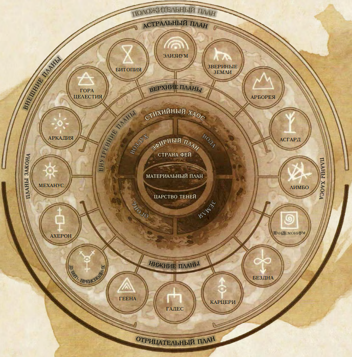

Планы существования
Вселенная игры DUNGEONS & DRAGONS невероятно обширна, и она ломится от множества миров, а также миллиардов альтернативных измерений, называемых планами существования. Они охватывают все миры, в которых Мастера проводят свои приключения, и все находятся в пределах относительно обычного Материального Плана. За этим планом находятся куски сырой стихийной материи и энергии, царства чистой мысли и идеи, дома демонов и ангелов, а также домены богов. Многие заклинания и магические предметы могут вытягивать энергию из этих планов, призывая обитающих там существ, позволяя общаться с их обитателями, и даже разрешая искателям приключений отправляться туда. Когда персонажи накопят силу, получив высокие уровни, вы можете отправиться спасать друга из ужасных глубин Бездны, или сами окажетесь с кружкой в руке рядом с дружелюбными великанами Асгарда. Вы сможете прогуляться по улице из чистого пламени или оказаться на поле боя, где мертвецы каждое утро воскресают.

Положительный и отрицательный планы
Как купол над всеми остальными планами висит Положительный План, источник энергии излучения и сырой жизненной силы, наполняющей всех живых существ, от самых крохотных до великанов. Его тёмным отражением является Отрицательный План, источник некротической энергии, уничтожающей жизнь и оживляющей нежить.
Материальный план
Материальный План это ядро, в котором философские и стихийные силы, формирующие другие планы, слились, образовав смертных и материю. Все миры D&D существуют в Материальном Плане, и именно он становится стартовой точкой большинства кампаний и приключений. Вся остальная часть мультивселенной описывается по отношению к Материальному Плану. Миры Материального Плана бесконечно разнообразны, так как являются отражениями творческого воображения Мастеров, проводящих в них игры, а также игроков, чьи герои ищут там приключения. Туда входят и планеты, превращённые магией в пустыни, и усеянные островками водные миры, и миры, где магия переплетена с продвинутыми технологиями, и миры, оставшиеся в каменном веке, и миры, где боги свободно ходят, оставив свои дворцы.
Более всего известны миры, опубликованные за долгие годы в качестве официальных миров для игр D&D — Серый Ястреб, Чёрное Болото, Сага о Копье, Забытые Королевства, Мистара, Birthright, Тёмное Солнце и Эберрон, а также другие. Во всех этих мирах множество героических искателей приключений и коварных злодеев, древние руины и забытые артефакты, свои подземелья и свои драконы. Однако даже если ваша кампания проходит в одном из этих миров, он принадлежит вашему Мастеру — можете считать его одним из тысяч параллельных миров, который может разительно отличаться от опубликованной версии.
Материальные отражения
Материальный План — богатое магией место, и его магическая сущность отражается на два плана, разделяющих его центральное место в мультивселенной. Страна Фей и Царство Теней это параллельные измерения, занимающие то же самое место в космологии, поэтому часто говорят, что это отражения или эхо Материального Плана. Миры и ландшафты этих планов подобны миру природы Материального Плана, но со своим собственным оттенком — более чудесные и магические в Стране Фей, исковерканные и бесцветные в Царстве Теней. Там, где на Материальном Плане стоит вулкан, в Стране Фей стоит гора, увенчанная кристаллами размером с небоскрёб, светящимися внутренним огнём, а в Царстве Теней стоит зазубренная скала, похожая на череп. Страна Фей это земля рассеянного света и чудес, страна маленького народца с большими желаниями, место музыки и смерти. Это место вечных сумерек, где фонари медленно качаются на нежном ветру, а огромные светлячки летают по полям и рощам. Небо освещено пастельными цветами то ли заходящего, то ли восходящего солнца. В действительности же солнце не восходит и не заходит; оно остаётся на месте, чуть выше горизонта. Вдали от населённых мест, которыми правит Благой Двор, земли представляют собой губительные болота и переплетение ветвей с колючками — идеальная территория для охоты Неблагих. В Стране Фей обитают фейские существа, подобные тем, что призываются заклинанием призыв лесных обитателей. Царство Теней это тёмное измерение, мир чёрного и белого, где цвета просто вытягиваются из всего. Это место токсичной тьмы, ненавидящей свет, где небо — чёрная яма, на которой нет ни солнца, ни звёзд.
За пределами материи
Кроме Материального Плана есть и другие планы существования и мифические таинственные царства. Эти миры не просто иные, они сформированы по совершенно другим стихийным и божественным законам, невозможным в обычном мире.
Планарные путешествия
Когда искатели приключений отправляются на другие планы, они совершают невероятные путешествия по границе существования в мистические места, где и выполняют свои задания. О таких путешествиях слагают легенды. Хождение в мир мёртвых, поиски слуг богов, или сделки с ифритами в их родном городе ещё долгие годы будут поводом для складывания песен и рассказов. Путешествия на планы вне Материального Плана можно совершать двумя способами: либо активацией заклинания, либо посредством портала.
Заклинания. Множество заклинаний позволяют напрямую или опосредованно обращаться к другим планам существования. Уход в иной мир и врата могут перемещать искателей приключений напрямую на другие планы существования, хоть и с разной точностью. Эфирность позволяет искателям приключений входить на Эфирный План и перемещаться оттуда на планы, с которыми тот граничит — Царство Теней, Страна Фей и Стихийные Планы. Заклинание проекция в астрал позволяет искателям приключений проецироваться в Астральный План, а оттуда на Внешние Планы.
Порталы. «Портал» это общий термин для стационарных соединений между планами, связывающими конкретное места одного плана с конкретным местом другого. Некоторые порталы похожи на дверной проём, открытое окно или затянутый туманом проход, и простой вход туда вызовет путешествие между планами. Другие представляют собой настоящие строения (круги стоящих камней, парящие башни, корабли под парусами, или даже целые города) существующие одновременно на нескольких планах, либо прыгающие с одного плана на другой. Некоторые могут быть воронками, соединяющими Стихийный План с похожими местами Материального Плана, например, жерло вулкана может вести на План Огня, а глубины океана — на План Воды.
Переходные планы
Эфирный План и Астральный План называются Переходными Планами. Это практически лишённые отличительных черт миры, служащие в основном лишь для перехода с одного плана на другой. Такие заклинания как эфирность и проекция в астрал позволяют персонажам входить в эти планы и переходить с них на другие планы. Эфирный План это затянутое туманами измерение, которое иногда описывают как великий океан. Его берега, называемые Пограничным Эфиром, пересекаются с Материальным Планом и Внутренними Планами, так что у всех мест этих планов есть общая граница с Эфирным Планом. Зрение некоторых существ может простираться на Пограничный Эфир, а заклинания видение невидимого и истинное зрение предоставляют на время такую способность. Некоторые магические эффекты тоже простираются с Материального Плана на Пограничный Эфир, в частности, эффекты, использующие силовое поле, такие как узилище и силовая стена. Глубины этого плана, Глубинный Эфир — регион крутящихся разноцветных туманов. Астральный План это царство мыслей и грёз, в котором посетители в виде бестелесных душ переходят в планы богов и демонов. Это огромное серебристое море, одинаковое и сверху и снизу, с белыми и серыми лоскутами, кружащимися среди сгустков света, напоминающими далёкие звёзды. Непостоянные цветные вихри крутятся в воздухе подобно вращающимся монетам. Здесь можно найти участки твёрдой материи, но большая часть Астрального Плана представляет собой открытое пространство.
Внутренние планы
Внутренние Планы окружают и охватывают Материальный План и его отражения, предоставляя сырое стихийное вещество, из которого и состоят все миры. Четыре Стихийных Плана — Вода, Воздух, Земля и Огонь — формируют кольцо вокруг Материального Плана, находясь при этом в кипящем Стихийном Хаосе. На своих внутренних границах, где они ближе всего к Материальному Плану (как в концептуальном, так и практически в географическом смысле), четыре Стихийных Плана напоминают миры Материального Плана. Все стихии там сплетены как на Материальном Плане, формируя землю, моря и небо. Однако чем дальше вы отходите от Материального Плана, тем чужероднее и враждебнее будут становиться Стихийные Планы. Там стихии существуют в чистой форме — огромные залежи земли, пылающий огонь, кристально-чистая вода и прозрачный воздух. Те регионы малоизвестны, поэтому при обсуждении Плана Огня, например, обычно имеют в виду именно пограничные территории. На дальней границе Внутренних Планов чистые стихии рассеиваются, перемешиваясь между собой в бесконечной буре сталкивающихся энергий и сливающихся субстанций, Стихийном Хаосе.
Внешние планы
Если Внутренние Планы это сырая материя и энергия, из которой состоит мультивселенная, то Внешние Планы это направления, мысли и стремления. Именно поэтому многие мудрецы называют
Внешние Планы божественными или духовными, так как больше всего Внешние Планы известны тем, что там живут боги. При обсуждении всего, что касается божеств, язык становится метафоричным. Их настоящие дома это не конкретные места, но воплощение идеи того, что Внешние Планы это царства мысли и духа. Так же как в случае со Стихийными Планами, можно представить воспринимаемую часть Внешних Планов как пограничный регион, а удалённые духовные области будут лежать за пределами восприятия. Даже в воспринимаемых областях внешность может быть обманчива. Вначале большинство Внешних Планов выглядит для обитателей Материального Плана гостеприимно и знакомо. Однако ландшафт может изменяться по воле влиятельных сил, живущих на Внешних Планах. Желания могучих сил, обитающих на этих планах, могут полностью всё менять, фактически, перестраивая реальность под свои нужды. Расстояние на Внешних Планах практически ничего не значит. Воспринимаемые области планов часто выглядят весьма небольшими, но они могут растягиваться до бесконечности. Можно пройти тур по Девяти Адам, с первого слоя до девятого, за один день — если силы Девяти Преисподних этого пожелают. В противном случае путникам придётся потратить недели для выматывающего перехода по одному лишь только слою. Среди Внешних Планов больше остальных известна группа из шестнадцати планов, соответствующих восьми мировоззрениям (исключая нейтральность) и промежуточным состояниям между ними.
| Внешние Планы |
| Внешний План | Мировоззрение |
| Гора Целестия, Семь Небес | ЗД |
| Битопия, Двойной рай | НД, ЗД |
| Элизиум, Благословенные Поля | НД |
| Звериные Земли, Дебри | НД, ХД |
| Арборея, Олимпийские просторы | ХД |
| Асгард, Героические владения | ХН, ХД |
| Лимбо, Вечно бурлящий хаос | ХН |
| Пандемониум, Завывающие Глубины | ХН, ХЗ |
| Бездна, Бесконечные слои | ХЗ |
| Карцери, Забытые Преисподние | НЗ, ХЗ |
| Гадес, Серые Пустоши | НЗ |
| Геенна, Мрачная вечность | НЗ, ЗЗ |
| Девять Преисподних (Баатора) | ЗЗ |
| Ахерон, Бесконечные поля битв | ЗН, ЗЗ |
| Механус, Механическая нирвана | ЗН |
| Аркадия, Мирные Королевства | ЗН, ЗД |
Планы, содержащие элемент добра, называются Верхними Планами. Небесные существа, такие как ангелы и пегасы, обитают на Верхних Планах. Планы, содержащие элемент зла, называют Нижними Планами. Исчадия, такие как демоны, дьяволы и юголоты, обитают на Нижних Планах. Мировоззрение плана полностью пропитывает его, и персонаж, чьё мировоззрение не совпадает с мировоззрением плана, чувствует себя очень неуютно. Например, когда доброе существо посещает Элизиум, оно чувствует себя в гармонии, но злое существо не сможет там найти себе место.
Прочие планы
Между описанными планами и за их пределами существует множество других миров.
Сигил и внешние земли
Внешние Земли это план между Внешними Планами, план нейтральности, но не нейтральности в плане отсутствия всего. На деле, он включает в себя по частичке всего, удерживая всё в парадоксальном равновесии — одновременно единогласном и сопротивляющемся. Это огромная область разнообразных ландшафтов, с открытыми прериями, возвышающимися горами и извилистыми мелкими реками, сильно напоминающая обычный мир Материального Плана. Внешние Земли круглые, как огромное колесо — те, кто описывают Внешние Планы как колесо, приводят в доказательство Внешние Земли, называя их миниатюрной копией строения всех планов. Этот аргумент достаточно весомый, но скорее всего наоборот, устройство Внешних Земель подало идею устройства Великого Колеса. По внешней границе, через равное расстояние, стоят портальные города: шестнадцать поселений, где каждое построено вокруг портала, ведущего на один из Внешних Планов. Каждый город имеет много общего с тем планом, куда ведёт его портал. В центре Внешних Земель, словно ось планарного колеса, невероятно высоко в небо уходит Пик. Над этой тонкой скалой парит похожий на кольцо Сигил, Город Дверей. В этом суетливом планарном мегаполисе есть бессчётное множество порталов в другие планы и миры. Сигил — торговый город. Купцы, товары и информация стекаются в него со всех планов. Здесь идёт бойкая торговля информацией о планах. В частности, командными словами и предметами, которые заставляют работать тот или иной портал. Эти портальные ключи пользуются большой популярностью, и многие гости города ищут конкретный портал или ключ от него, чтобы пойти дальше.
Демипланы
Демипланы это небольшие межпространственные участки со своими собственными правилами. Это части реальности, ни к чему не присоединившиеся. Демипланы возникают по разным причинам. Одни создаются заклинаниями, такими как демиплан, или силой мысли влиятельного божества или другой сущности. Они могут существовать сами по себе, словно складка на ткани реальности или зарождающиеся вселенные. В демиплан можно войти через единственное место, в котором он соприкасается с другим планом. Теоретически, заклинание уход в иной мир может привести путников в демиплан, но подобрать для настройки на него нужную частоту невероятно трудно. Заклинание врата в этом плане надёжнее, если заклинатель знает нужный ему демиплан.
Дальний предел
Дальний Предел находится за пределами известной мультивселенной. В сущности, это может быть абсолютно иная мультивселенная со своими собственными физическими и магическими законами. Там, где энергия Дальнего Предела просачивается на другой план, жизнь и материя искажаются, становясь чужеродными формами, не подчиняющимися обычной геометрии и биологии. Сущности, обитающие в Дальнем Пределе, слишком чужеродны, чтобы обычное сознание могло принять их без вреда для себя. Громадные существа парят там в нигде, охваченные безумием. Невыразимые твари шепчут жуткую истину тем, кто осмелится слушать. Для смертных знания Дальнего Предела это триумф сознания над границами материи, пространства и даже разума. Известных порталов в Дальний Предел нет, по крайней мере, работающих. Древние эльфы когдато пронзили границу тысячелетий большим порталом в Дальний Предел на горе Пик Огненной Бури, но их цивилизация сгинула в кровавом ужасе, и местоположение этого портала (и даже его мира) теперь забыто. Теоретически, могут существовать и другие порталы, через которые чужеродные силы отравляют окрестные земли Материального Плана.